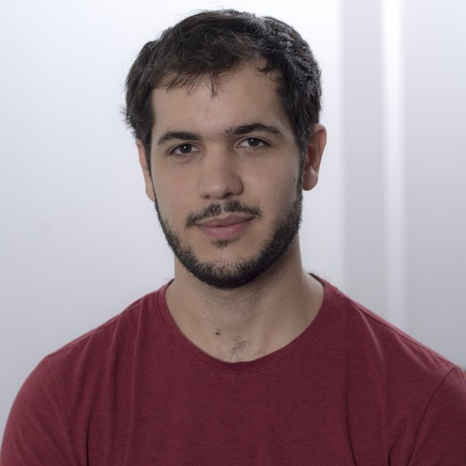
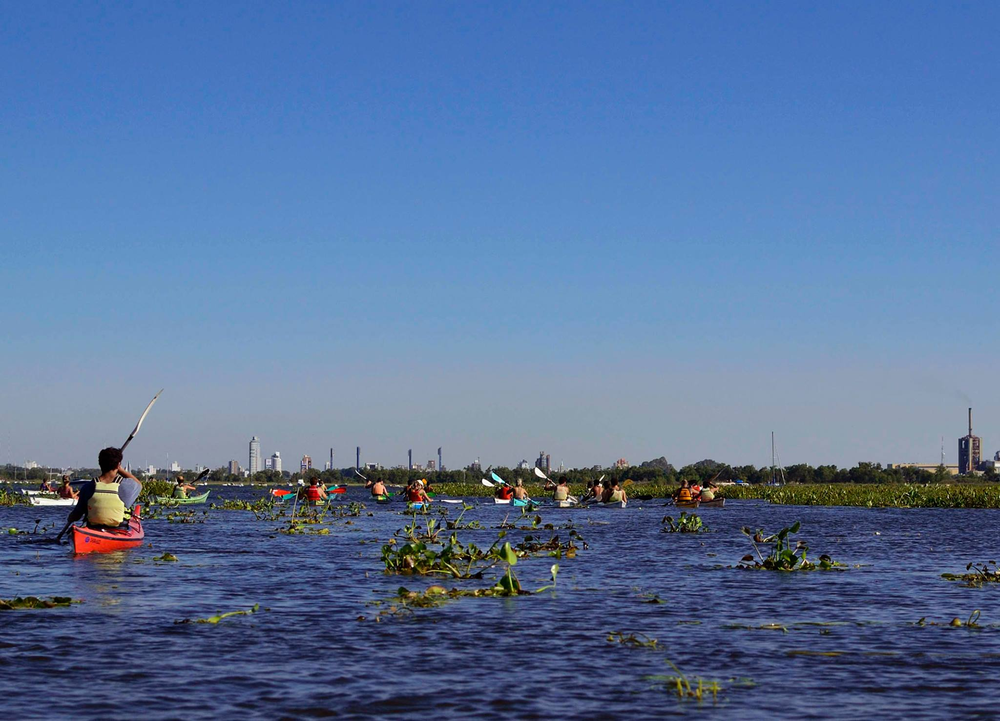

|

|
César SabaterDRIM Team, CNRS9 Avenue Jean Capelle 69100 Villeurbanne, France e-mail: cesar dot sabater at insa-lyon dot fr |
Bio
I am a postdoctoral researcher in the DRIM Team at INSA Lyon, working with Sonia Ben Mokhtar. I study privacy-preserving and secure algorithms for the processing of sensitive data (including, but not limited to, machine learning techniques). More concretely, my current interests include:
- information-theoretical privacy guarantees such as differential privacy
- security guarantees in the presence of active adversaries (e.g., via proofs by simulation)
- efficient design of decentralized algorithms (e.g., gossip protocols)
- empirical assessment of privacy and robustness to attacks, especially in decentralized machine learning (e.g., inference and data-poisoning attacks)
I completed my PhD in the MAGNET Team at Inria Lille under the supervision of Jan Ramon. There, I studied how to improve privacy-accuracy-communication trade-offs and robustness in decentralized algorithms via (differentially private) perturbations and cryptographic primitives such as zero-knowledge proofs and secure multi-party computation.
Before starting my research career in privacy, I explored several topics in Computer Science, including:
- research in high-performance computing at the Inria Strasbourg CAMUS Team
- summer courses with Rob Morris in extremal graph theory and combinatorics at the Institute of Pure and Applied Mathematics (IMPA) in Rio, Brazil
- studies in formal methods as part of my Master’s degree at the Universidad Nacional de Rosario, Argentina
I am from Margarita, a small town in the countryside of Santa Fe, Argentina. During secondary school, I enjoyed participating in algorithmic design contests. I was a bronze medalist at the National Olympiad in Informatics and the first substitute for the national team for the International Olympiad in Informatics (IOI).
I have an Erdős number of 4 via Jan, my PhD supervisor. You can find my CV here and my Google Scholar profile here.
Service
- NeurIPS 2023 (top 8%), 2024, 2025 Reviewer
- ICML 2023, 2024, 2025 Reviewer
- ICLR 2024, 2025 Reviewer
- AAAI 2024 PC Member
- ICDCS 2024 Reviewer
- ACM TOPS 2025 Reviewers
- IH&MMSec Workshop 2024 (PC Member)
Publications
- César Sabater, Florian Hahn, Andreas Peter, and Jan Ramon. "Private Sampling with Identifiable Cheaters." Proceedings on Privacy Enhancing Technologies 2023.2 (2023). [ Paper ]
- César Sabater, Aurélien Bellet, and Jan Ramon. "An accurate, scalable and verifiable protocol for federated differentially private averaging." Machine Learning (2022): 1-45. [ Paper | arXiv ]
- César Sabater and Jan Ramon. "Zero Knowledge Arguments for Verifiable Sampling." NeurIPS 2021 Workshop Privacy in Machine Learning. 2021. [ Paper ]
- César Sabater, Aurélien Bellet, and Jan Ramon. "Distributed Differentially Private Averaging with Improved Utility and Robustness to Malicious Parties." NeurIPS 2020 workshop on Privacy Preserving Machine Learning-PriML and PPML Joint Edition. 2020. [ arXiv ]
- Maxime Schmitt, César Sabater, and Cédric Bastoul. "Semi-Automatic Generation of Adaptive Codes." In IMPACT 2017, 7th International Workshop on Polyhedral Compilation Techniques. 2017. [ HAL]
- Cédric Bastoul and César Sabater. "Automatic Generation of Adaptive Simulation Codes." In SimRace, Conference on Numerical Methods and High Performance Computing for Industrial Fluid Flows. 2015. [ HAL ]
- Ana Casali, Claudia Deco, Cristina Bender, Santiago Fontanarrosa, and César Sabater. "Asistente para el eepósito de objetos en repositorios con extracción automática de metadatos." In XV Simposio Internacional de Tecnologías de la Información y las Comunicaciones en la Educación SINTICE, pp. 133-136. 2013. [ Researchgate ]
Some pictures I like

